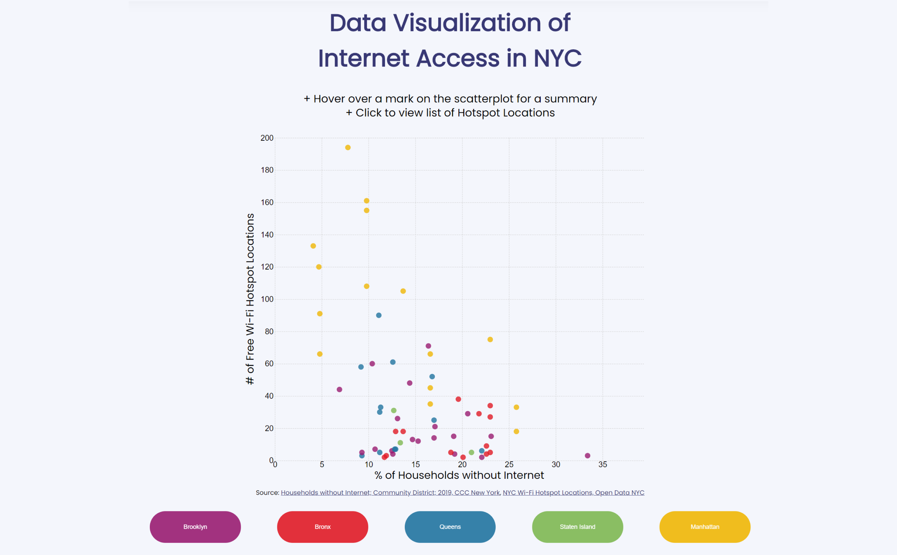

Internet Access

Team Partner: Jiyoon Moon
Together, Jiyoon and I explored a dataset that includes information about locations with free access to wifi, including their address, wifi provider, and wifi limitations. The first shocking conclusion that we took away from the data was just how many places in New York did not have access to the Internet.
Internet Access has become such a necessity in recent years and especially now due to COVID-19. A majority of schools and workplaces have made the switch to online learning and work from home, many have even announced the permanent switch or the option to do so. What happens when one does not have access to the Internet at their household? We wanted to highlight the importance of ensuring that technology and Internet access becomes a staple in every household. Many jobs require digital literacy and the ability to work on a variety of platforms; without equal technology and equipment provided, many individuals will suffer in this regard.

Internet Access
Team Partner: Jiyoon Moon
Context: University Midterm
Timeline: October - November 2020
Tools: HTML, CSS, d3.js, Javascript, Adobe Illustrator/Photoshop
01 Overview
Together, Jiyoon and I explored a dataset that includes information about locations with free access to wifi, including their address, wifi provider, and wifi limitations. The first shocking conclusion that we took away from the data was just how many places in New York did not have access to the Internet.
According to one of the websites that we looked to data for, we found that there are many communities in which 21.0% - 33.4% of households do not have access to the Internet; this includes, dial-up, broadband, and cellular data plans. The data had a wide variety of fields which we found to be very useful in understanding the numbers in correlation to economic/financial/personal status, such as Economic conditions, Health/Mental Health (Infant/Maternal Health, General, Asthma, Insurance, Nutrition, etc.), Early Care & Education, Youth/Juvenile Justice, and Child Welfare/Community Service. The wide array of fields allows for a broader understanding of who is not afforded the right to have Internet access in their households and possibly the reason that may be.
02 Research
Internet Access has become such a necessity in recent years and especially now due to COVID-19. A majority of schools and workplaces have made the switch to online learning and work from home, many have even announced the permanent switch or the option to do so. What happens when one does not have access to the Internet at their household? We wanted to highlight the importance of ensuring that technology and Internet access becomes a staple in every household. Many jobs require digital literacy and the ability to work on a variety of platforms; without equal technology and equipment provided, many individuals will suffer in this regard.
03 The Next Steps (Prototype)
After conducting our research, we wanted to prototype our website in order to establish the tone and mood in terms of aesthetic choices.